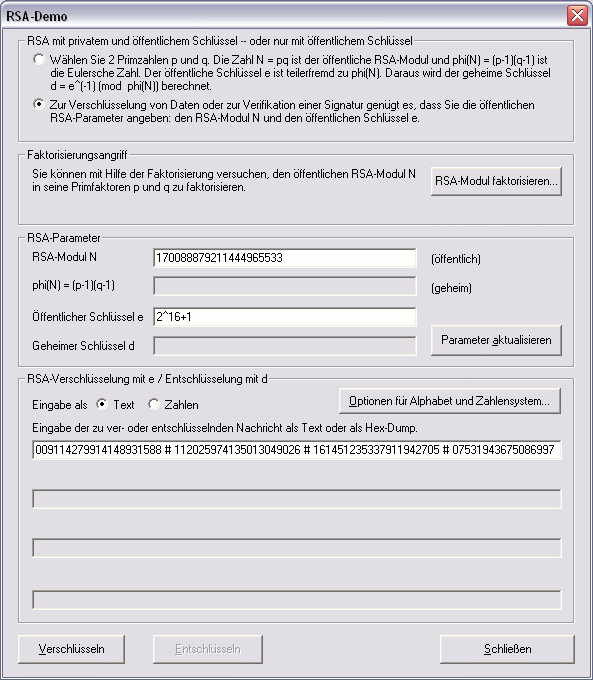
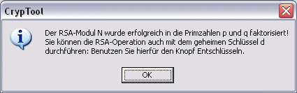
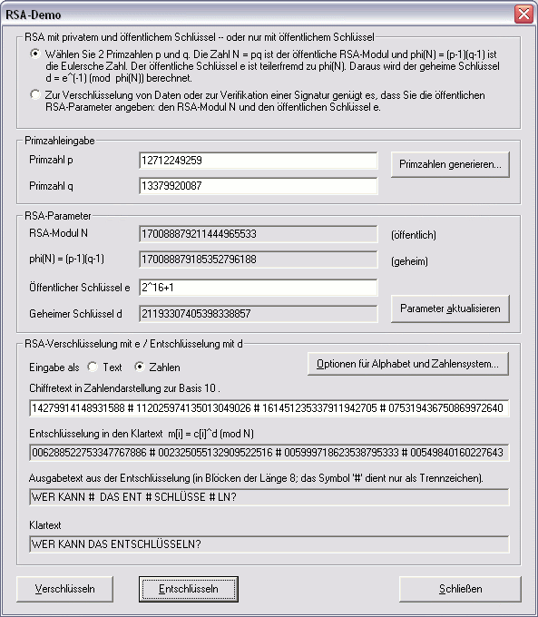

Die Sicherheit des RSA-Verfahrens beruht unter anderem darauf, dass ausgehend von dem öffentlichen RSA-Modul N – bei ausreichender Größe der Zahl N – es praktisch nicht möglich ist, die Faktoren p und q zu berechnen.
Für zu kleine Schlüssellängen können Sie versuchen, die Zahl N in die Primzahlen p und q zu faktorisieren.
Wenn Sie im Dialog RSA-Demo nur den öffentlichen Modul N und den öffentlichen Schlüssel e eingegeben haben, dann können Sie über den Button RSA-Modul faktorisieren versuchen, N in die Primfaktoren p und q zu zerlegen.
Bei erfolgreicher Faktorisierung werden alle geheimen Parameter in den Dialog eingetragen, und Sie können auch Daten entschlüsseln und Dateien signieren.
Bemerkung
Der Dialog RSA-Demo hat in der ersten Gruppierung zwei Radiobuttons:
Entsprechend ist die 2. Gruppierung eine andere!
Hat man zuerst die untere Sicht gewählt, und dann als Angreifer eine erfolgreiche Faktorisierung durchgeführt, wechselt der Dialog automatisch in die Sicht des Besitzers.
Beispiel eines Faktorisierungsangriffs
In diesem Beispiel liegen die Primfaktoren p und q im Bereich zwischen 233 und 234.



Vergleiche Szenario zur RSA-Demo.